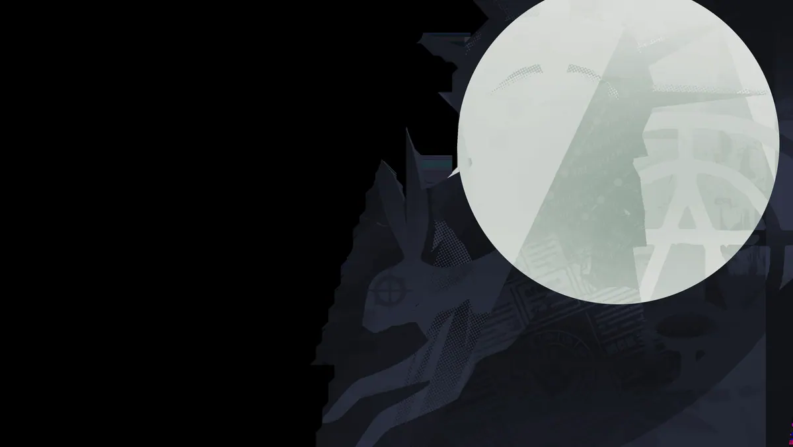

Místico de truques e ilusões, bom para confundir o inimigo.
História
Os pais de Henry disseram que ele era muito jovem e impulsivo para mexer com magia de verdade, e então lhe deram um baralho de cartas para brincar. Ele aprendeu a prestidigitar naturalmente e logo estava deslumbrando seus colegas de classe com feitos fantásticos de ilusões que eram realizados sem artefatos místicos ou encantamentos.
Quando ele estava no ensino médio, ele conheceu Savannah, e seu amor mútuo pela magia do palco gerou um romance turbulento. Logo eles se apaixonaram e criaram um ato juntos. Obviamente eles estavam destinados a existir; e assim, no baile, Henry pediu Savannah em casamento e eles se casaram logo após a formatura.
Não é de surpreender que ambos os pais não tenham ficado entusiasmados com essa perspectiva, mas Henry e Savannah sabiam que eram almas gêmeas. E assim eles consolidaram seu amor um pelo outro ao fazer com que um místico de sangue prendesse suas almas para a eternidade.
Quando um acidente no palco custou a vida de ambos, ninguém sabia quem culpar. Henry afirma que Savannah estava fora de posição. Savannah diz que Henry não esperou pela deixa. Mas uma coisa é certa, já que suas almas estão ligadas uma à outra, nenhum deles conseguiu seguir em frente. Agora um par de fantasmas briguentos, Henry e Savannah precisam trabalhar juntos se quiserem ter alguma chance de desfazer sua união eterna.
História oficial do jogo, traduzida automaticamente para o português.
Números reais
Habilidades
Dispara um raio mágico que causa mais dano quanto mais longe vai; com o Assistente em campo, ele também dispara um raio mais fraco.
Invoca um Assistente num local alvo que ataca sempre que você atira; a habilidade 2 troca sua posição com a do Assistente.
Enfeitiça uma área e transforma todos os inimigos dentro em Coelhos por um tempo limitado.
Copia a suprema de um herói inimigo por um tempo; reativar usa a suprema copiada.
Builds mais usadas
21.407 partidas registradas com esta build.
Regeneração Extra (800) · Surto Arcano (1.600) · Espírito Extra (800) · Taxa Extra (800) · Recarga rápida (3.200) · Espírito Melhorado (1.600) · Barreira Reativa (1.600) · Fortaleza (3.200) · Colecionador de Troféus (1.600) · Andador do Véu (3.200)
18.666 partidas registradas com esta build.
Rodadas de alta velocidade (800) · Rodadas de Abertura (1.600) · Taxa Extra (800) · Espírito Melhorado (1.600) · Recarga rápida (3.200) · Colecionador de Troféus (1.600) · Emblema do Encantador (1.600) · Trama de Sombra (3.200) · Dissipar Magia (3.200) · Pedra de Urdidura (3.200)
14.902 partidas registradas com esta build.
Rodadas de alta velocidade (800) · Rodadas de Abertura (1.600) · Taxa Extra (800) · Espírito Extra (800) · Botas de corrida (800) · Espírito Melhorado (1.600) · Recarga rápida (3.200) · Emblema do Encantador (1.600) · Expansão Mística (800) · Espírito sem limites (6.400)
Confrontos reais
 Pocket — 51.7% de vitória
Pocket — 51.7% de vitória Shiv — 50.8% de vitória
Shiv — 50.8% de vitória Mina — 50.8% de vitória
Mina — 50.8% de vitória The Doorman — 50.4% de vitória
The Doorman — 50.4% de vitória Mirage — 50.2% de vitória
Mirage — 50.2% de vitória Silver — 49.9% de vitória
Silver — 49.9% de vitória
 Graves — 39.1% de vitória
Graves — 39.1% de vitória Rat King — 40.5% de vitória
Rat King — 40.5% de vitória Paige — 40.9% de vitória
Paige — 40.9% de vitória Victor — 41.3% de vitória
Victor — 41.3% de vitória Seven — 41.5% de vitória
Seven — 41.5% de vitória Haze — 41.7% de vitória
Haze — 41.7% de vitória
Ver a página de counters do Sinclair
O que upar primeiro
Nível por nível, na ordem que os jogadores mais usam em partidas de verdade. A porcentagem mostra quantos escolheram aquela habilidade naquele nível.
Melhores duplas
Heróis que mais ganham jogando junto com ele, em partidas reais (pelo menos 1.500 partidas juntos).
- Graves53,6%
- Rat King53,2%
- Paige51,1%
 Kelvin50,5%
Kelvin50,5%- Seven50,0%
 Paradox39,7%
Paradox39,7%- Mirage39,7%
- Pocket40,0%
Rota (lane)
Na rota, cada lado joga em dupla. Estes números são de confrontos reais: a diferença de almas é medida com o jogo já começado, então almas no verde significa que ele costuma estar na frente.
- Seven — 37,8% de vitória −724 almas (230 partidas)
- Rat King — 42,8% de vitória −386 almas (680 partidas)
 Drifter — 45,3% de vitória −528 almas (161 partidas)
Drifter — 45,3% de vitória −528 almas (161 partidas)- Paige — 46,6% de vitória +200 almas (236 partidas)
Histórico de win rate
21/09: 45.3% → 09/11: 47.3% → 28/12: 44.9% → 15/02: 47.0% → 05/04: 45.6% → 24/05: 44.2% → 12/07: 44.0% → 30/08: 45.2% → 18/10: 44.9%